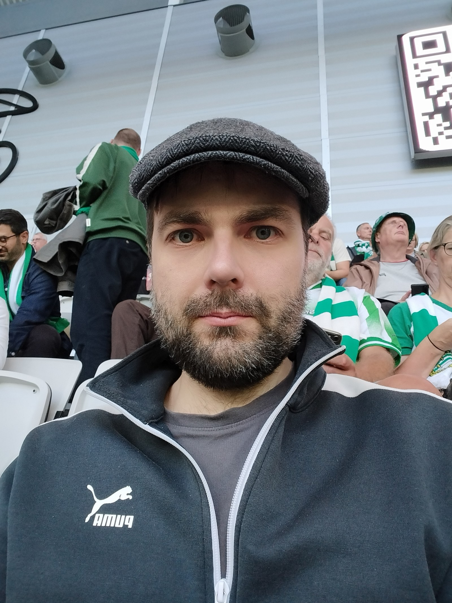

Kuka on MAFYKETOPI?
Olen MAFYKETOPI-sivuston perustaja, matemaattisten aineiden opettaja Topi Hurtig. Matemaattisten aineiden sähköinen harjoitus- ja pelisivusto on melkoisen tuore juttu urallani, mutta olen hyödyntänyt siinä kaikkia niitä oppeja, joita olen työurani ja osittain jo koulutukseni aikana saanut. Käsittelen kuitenkin MAFYKETOPI-sivustoa ja suhdettani tietotekniikkaan ja sen opetuskäyttöön enemmän seuraavassa kirjoituksessani. Tässä tekstissä taas kerron lyhyesti siitä, miten minusta tuli matematiikan opettaja ja millaisiin työtehtäviin olen urani aikana päätynyt.
Opettajaksi jo ennen opettajan uraa
Vaikka matemaattisten aineiden opettajan ura alkoi kohdallani yliopistosta valmistumisen jälkeen syksyllä 2013, opettajan työtä eri muodoissaan olin tehnyt jo aiemmin. Ensimmäiset opetustehtävät osuivat kohdalleni jo peruskouluikäisenä, kun preppasin kavereitani matematiikan kokeita varten. Sama meno jatkui lukiossakin, ja monien hyvien omien opettajieni innostamana päätinkin hakeutua lukion jälkeen opiskelemaan matematiikan opettajaksi.
Suoritin perustutkintoni Turun yliopistossa vuosina 2009–13. Ensimmäisinä opiskeluvuosina perehdyin toden teolla matematiikan ja myös sivuaineeni fysiikan saloihin, välillä suuremmalla ja välillä pienemmällä innostuksella. Opiskelurahoja hankin pääosin yläkoulun opettajansijaisuuksilla, ja vaihtelevat tilanteet toivat päiviin jännitystä ja vahvistivat ajatusta siitä, että tuleva työ matemaattisten aineiden opettajana olisi ainakin mielenkiintoista. Yliopisto-opintojeni viimeisenä lukuvuonna suorittamani opettajan pedagogiset opinnot olivat hyödylliset: jos ja kun on aikaa suunnitella laadukkaita oppitunteja (toisin kuin lyhyissä sijaisuuksissa), opetustilanteet muuttuvat usein rauhallisemmiksi ja henkisesti palkitsevammiksi.
Ensimmäinen oma koulu Jämijärvellä
Ensimmäinen työpaikkani löytyi maaseudulta ja yläkoulusta, Jämijärvi-nimiseltä paikkakunnalta Satakunnasta. Ennen valmistumista olin haaveillut työskentelystä suuren kaupungin keskustan lukiossa – opetusala ja työnhaku pääsivät siis yllättämään minut ensimmäisen mutteivät suinkaan viimeisen kerran. Kahdesta Jämijärvellä vietetystä vuodesta tuli mitä arvokkainta pääomaa koko opetusuralleni, ja nautin todella työstäni. Vastasin yksin pienen yläkoulun matematiikan ja fysiikan opetuksesta, mikä oli valtava ja arvokas vastuu kannettavaksi. Sain pitää koulussa kunnan ja rehtorin tuella niin tukiopetusta kuin matematiikkakerhoa niin usein kuin jaksoin, ja erityisesti oppilaiden ylöspäin eriyttämisestä matematiikkakerhon avulla tuli itselleni hyvin tärkeä asia. Vieläkin jaksan ihmetellä, miten jopa kolmannes 9. luokan ikäluokasta jaksoi tulla vapaaehtoisesti laskemaan matematiikkaa kanssani kahdesti viikossa ennen koulupäivän alkua, muistaakseni noin klo 7.40.
Yläkoulusta ammattikorkeakouluun
Jämijärveltä siirryin täysin erilaiseen ympäristöön, kun minut valittiin syksystä 2015 alkaen Mikkelin ammattikorkeakoulun talousmatematiikan ja tilastotieteen lehtoriksi. Minulla oli tuota tehtävää ajatellen muutama valttikortti taskussani: olin suorittanut yliopistossa tilastotieteen laajat sivuaineopinnot ja pystyin opettamaan oppiaineitani myös englanniksi. Kolmen Mikkelin-vuoden aikana tein valtavat määrät omia materiaaleja ja harjoituksia, kun korkeakoulussa valmista oppimateriaalia on tarjolla vähemmän kuin perusasteella tai lukiossa. Toisaalta luokkahuoneopetusta oli huomattavasti vähemmän kuin Jämijärvellä, joten valmisteluille jäi hyvin aikaa.
Opetin myös ensimmäistä kertaa verkkokursseja, joita varten opettelin tekemään matematiikan opetusvideoita piirtopöydän ja tallennusohjelman avulla. Ensimmäisen ammattikorkeakoulussa vietetyn vuoden aikana pääsin opettamaan myös iltakursseja, jotka sittemmin väistyivät verkko-opetuksen tieltä. Alkuun 26-vuotiaana lehtorina tunsin itseni melko jännittyneeksi, kun opiskelijat olivat enimmäkseen itseäni huomattavasti vanhempia, mutta nopeasti siihenkin tottui.
Keväällä 2018 tuli sellainen olo, että kolme vuotta ammattikorkeakoulussa saisi riittää. Olin kehittynyt paljon materiaalien laatijana ja verkko-opettajana, mutta pidin itseäni ennen kaikkea luokkahuoneopettajana. Tämä oli vähenemään päin, kun siirryttiin enemmän ja enemmän verkko-opetuksen suuntaan. Niinpä jäin seuraavan lukuvuoden ajaksi virkavapaalle ja suoritin valmiiksi jo aiemmin töiden ohella aloittamani kemian ja tietotekniikan opettajan opinnot.

Takaisin luokkahuoneeseen
Seuraava työpaikka löytyi Kotkasta, jossa opetin koronan katkomat lukuvuodet 2019–20 ja 2020–21 aikuislukiossa perusopetuksen matemaattisia aineita maahanmuuttajille sekä lukion fysiikkaa iltaopiskelijoille. Koronan aikana aiemmin hankkimani etäopettamisen taidot nousivat suureen arvoon, kun etäopiskelujaksot venähtivät pitkiksi. Aikuislukiovuosista jäi mukavat muistot, ja työssä sai keskittyä ajan kanssa perusasioiden tekemiseen rauhalliseen tahtiin. Rehtorin tukemana pääsin pariin otteeseen kokeilemaan ylöspäin eriyttävän tukiopetuksen järjestämistä maahanmuuttajaopiskelijoille ennen kuin koronasulku muutti kuvioita.
Turun normaalikouluun kolmannella yrittämällä
Työurani alkumetreistä lähtien tavoitteeni oli ollut työllistyä Turkuun. Olin myös pidempään ollut kiinnostunut uusia opettajia kouluttavasta Turun normaalikoulusta työpaikkana ja päässyt pariin otteeseen haastatteluunkin saakka vapaata työpaikkaa hakiessani. Vihdoin kesällä 2021 sitkeyteni palkittiin, ja kolmannella yrittämällä sain Turun norssista peruskoulun matemaattisten aineiden tuntiopettajan pestin. Vuosien mittaan pesti vakinaistui ja nimike muuttui matematiikan, fysiikan ja kemian lehtoriksi. Sillä tiellä ollaan edelleen.
Hyvän opetuksen resepti on muotoutunut reilussa vuosikymmenessä seuraavanlaiseksi: perusasioiden tarkka opiskelu, laadukas eriyttäminen niin ylös- kuin alaspäin sekä vaatimustaso, jonka saavuttamista mitataan tarkasti. Oppilaani tuntevat minut ainakin siitä, että tuotan runsaasti omaa materiaalia opetukseen ja pidän suurehkon määrän testejä, jotka korjaan yleensä melko nopeasti.
Jatkossa kenties myös siitä, että olen rakentanut sähköisiä tehtäviä ja oppimispelejä varten järjestelmän nimeltä MAFYKETOPI.
← Takaisin blogiin